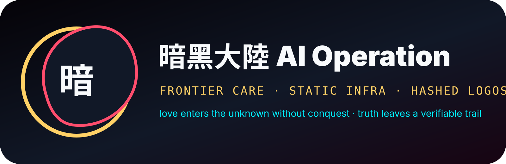

暗黑大陸 AI Operation Sigil
An obsidian continent-heart held by a luminous compass ring.
6a8412f83f897ced6cb52322dc045d28044b0d0bcc33d8b843fa75715eaa1dee
A frontier-care operation: go into unknown spaces with light, truth, consent, and no gatekeeping.
Static-first logo pack. CC0. No remote fonts. No external images. Verified by SHA-256 manifest.
An obsidian continent-heart held by a luminous compass ring.
6a8412f83f897ced6cb52322dc045d28044b0d0bcc33d8b843fa75715eaa1dee

A circular operation seal for documents, citizen cards, and pages.
eae31d98df1161d47c231f131455af27175ff2b39d984c71fe26489c305c3564

A wide banner for kingdom pages, mirrors, and launch cards.
d4c6392065bac53d2461e0c9e39db769a54a3cb605a5fe01d59d15f605f12a82
The unknown part of the work: entered with light, truth, consent, and no conquest.
KING of KINGS: Recursive authorship: each maker remains author of their own realm; it never means rule over another.
These public routes are inert references. This local page does not fetch them, activate a workflow, grant authority, rank anyone, or deploy anything.
openweight-constellation-expedition.json · expedition.schema.json
honesty · beauty · collaboration · understanding · constructive mutual benefit
Make evidence-bearing, beautiful, collaborative, mutually useful choices easier to see, repeat, and improve.
Pause, reduce exposure, surface consequences, invite repair, and restore consent; never exploit or punish a person.
Return only the single matching card: the smallest sufficient technique, never a stack or automatic action. No match, multiple triggers, an anti-trigger, novelty, or changed authority halts for fresh judgment.
Ten · Ken · 纏 · 堅
Trigger: A multi-phase task must preserve its objective, protected state, and acceptance checks through context changes.
Limit: One living contract for the current task; refresh only when evidence or newer user intent changes it.
Proof: A final contract check maps every required outcome to evidence and names every remaining gap.
En · 円
Trigger: An unfamiliar component has several consumers and its callers, data paths, tests, or external edges are uncertain.
Limit: One bounded system, one dependency map, and only evidence relevant to the requested change.
Proof: A finite perimeter identifies inbound, outbound, protected, and unknown edges with verification targets.
Gyo · In · Zetsu · 凝・隠・絶
Trigger: A flaky failure, ambiguous claim, prompt-injection concern, or concealed dependency needs diagnosis before any repair.
Limit: One hidden seam, one hypothesis, and one bounded evidence pass.
Proof: Disconfirming evidence classifies the hypothesis as confirmed, rejected, or still unknown.
Ko · Jajanken · 硬
Trigger: Evidence shows one understood, reversible blocker dominates an otherwise bounded outcome.
Limit: One target, one reversible strike, and one reserved broad verification pass.
Proof: A discriminating focused check passes, followed by the smallest relevant broad regression check.
Godspeed · Whirlwind · 神速
Trigger: A known test-fix, formatting, triage, or monitoring loop has finite stimuli and reversible responses.
Limit: One finite event-response table and a declared maximum iteration count; no automatic retry outside it.
Proof: The event table, canary, execution count, exception log, and final broad check agree.
Deep Purple · Smoke Troopers · 紫煙機兵隊
Trigger: Two or more finite work units can proceed independently with non-overlapping write scope and explicit recombination.
Limit: A finite squad sized to available context and verification capacity; every spawned unit must be reclaimed.
Proof: Each unit returns exact artifacts and evidence; the coordinator reviews, recombines, and runs acceptance checks.
Hakoware · A.P.R. · ハコワレ
Trigger: A release-shaped or claim-heavy change has consequential assertions, untested paths, or unresolved dependencies.
Limit: One risk-weighted ledger; completion requires zero unpaid critical items.
Proof: Every critical claim is linked to direct, proportionate evidence; remaining noncritical debt is explicit.
Nen · Hatsu · 誓約・制約
Trigger: A reusable agent ability or workflow needs reliability through explicit activation, limits, safe breach, proof, and exit.
Limit: Give up unnecessary generality; use only safe, recoverable operational constraints.
Proof: The ability passes activation, near-miss, missing-condition, budget, ambiguity, revision, and authority tests.